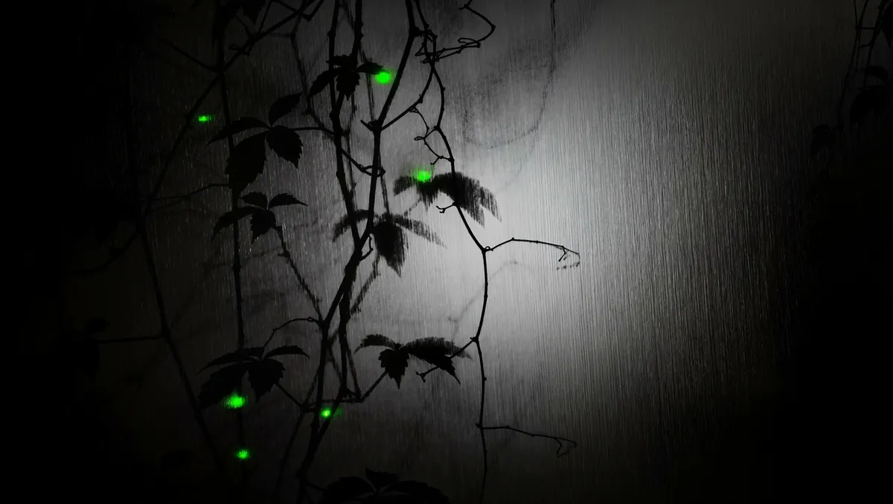
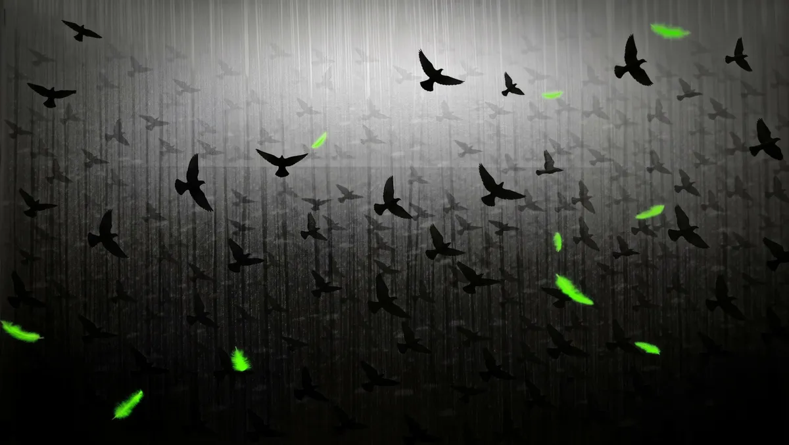
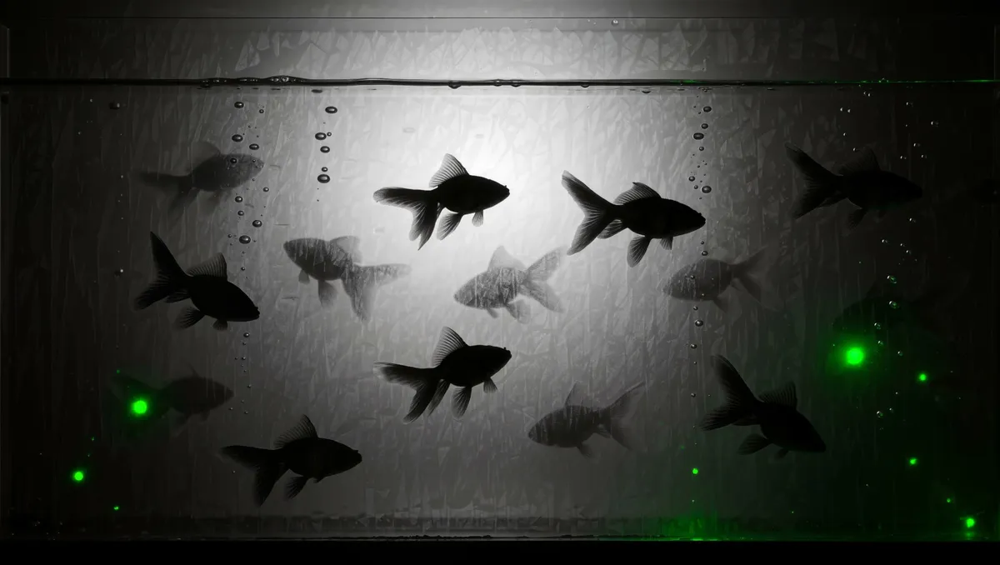
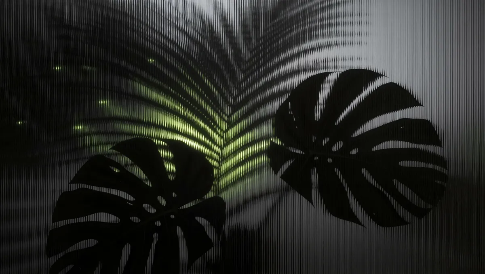

미디어아트 구독료는 얼마인가요?
화면 수와 종류(LED·모니터, 빔프로젝터 1대, 빔프로젝터 2대 맵핑)에 따라 안내해 드립니다. 구독 문의에 화면 크기와 대수를 적어 주시면 바로 견적을 드립니다.
This Season
간유리 너머로 비치는 그림자와 초록 불빛 하나. 어두운 바탕에 또렷한 그림자라 LED 화면에서 특히 깊게 보입니다. 모두 이어 붙인 자리가 보이지 않게 끝없이 도는 작품이고, 가로·초광폭·세로 화면에 맞춰 나갑니다.




How it works
Screens
| LED · 모니터 | 화면을 빈틈없이 채웁니다 · 밝기·대비·채도·색온도 조절 |
|---|---|
| 빔프로젝터 1대 | 네 꼭짓점을 끌어 벽 모양에 맞춤 · 창문·기둥 자리는 가리개로 · 색 조절 |
| 빔프로젝터 2대 | 두 화면에 나눠 쏘고 겹치는 부분을 자연스럽게 녹여 한 화면으로 · 두 영상 시간 자동 맞춤 · 화면마다 꼭짓점과 색 따로 |
| 인터넷이 없는 곳 | 작품을 담은 USB 플레이어로 같은 구독을 받습니다 |
화면이 아직 없다면 행사에는 대구 LED 패널 렌탈이나 미디어아트 박스 대여를, 상설이라면 LED 패널 · 전광판 설치와 미디어파사드 설치를 함께 보세요. 데이터를 받아 움직이는 작품이 필요하면 공공 API 미디어아트 연동으로 만듭니다.
FAQ
화면 수와 종류(LED·모니터, 빔프로젝터 1대, 빔프로젝터 2대 맵핑)에 따라 안내해 드립니다. 구독 문의에 화면 크기와 대수를 적어 주시면 바로 견적을 드립니다.
크롬이나 엣지 브라우저가 돌아가는 PC나 미니 PC 한 대와 HDMI로 연결된 화면이면 됩니다. 빔프로젝터 2대 맵핑은 HDMI 출력이 두 개인 미니 PC를 권합니다. 장비가 없으시면 함께 준비해 드립니다.
매일 자정(서울 기준)에 다음 작품으로 바뀝니다. 바뀌는 순간에도 검은 화면 없이 겹쳐 넘어갑니다. 작품은 계속 늘어나며, AI로 만든 영상 작품도 함께 들어갑니다.
화면 설정에서 네 꼭짓점을 끌어 벽 모양에 맞추고, 창문이나 기둥 자리는 가리개로 가릴 수 있습니다. 빔프로젝터 2대는 겹치는 부분을 자연스럽게 녹여 한 화면으로 이어 줍니다. 프로젝터마다 다른 색은 밝기·대비·채도·색온도로 맞춥니다. 설정은 그 기계에 저장됩니다.
잠시 끊겨도 지금 돌고 있는 작품은 계속 돕니다. 재생이 멈추면 스스로 알아채고 다시 띄웁니다. 인터넷이 아예 없는 곳은 작품을 담은 USB 플레이어로 같은 구독을 받으실 수 있습니다.
네. 구독 작품은 매장, 로비, 전시장 같은 공간에서 상영하도록 만든 오늘은 봄날의 창작물입니다. 구독 기간 동안 해당 공간에서 자유롭게 트시면 됩니다.
화면 크기와 대수를 구독 문의로 남겨 주시면 구독료와 함께 답신드립니다.